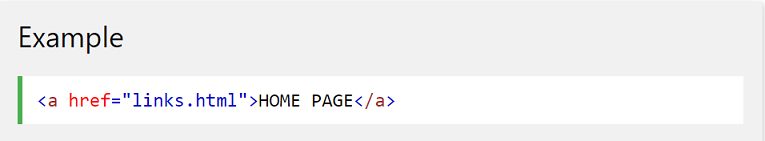

Local Links
Introduction
A Local link uses a page name (including sub-directories if needed) as the target. It is local to the current server.
Syntax
<a href="Page_in_the_server.html">Click here to go to page </a>

<< go back